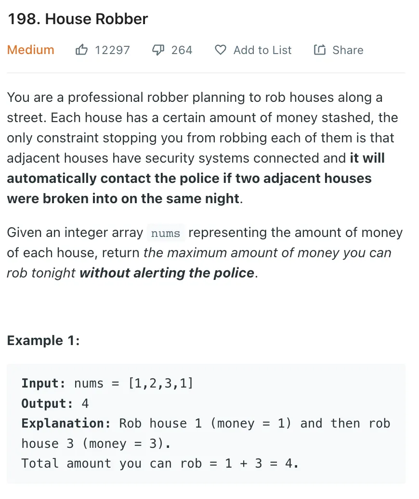
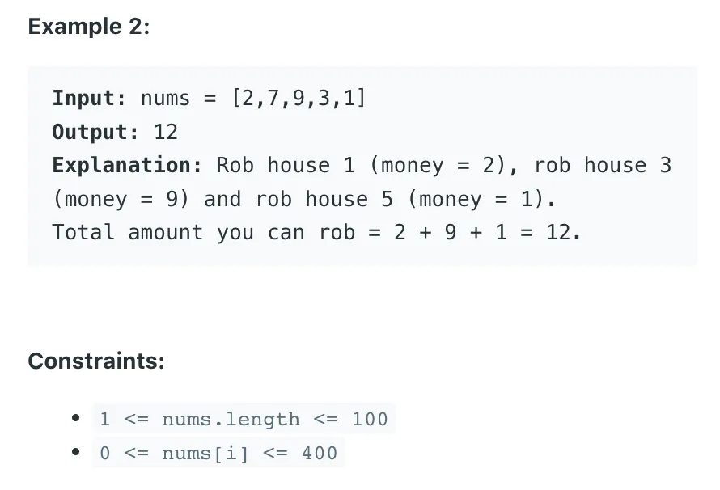

198. House Robber
考過的公司：Asked by: Amazon, Bytedance, Google, tiktok
Question


✍🏽 My Solution
Runtime: 0 ms, faster than 100.00% of Java online submissions for House Robber. Memory Usage: 42.5 MB, less than 7.56% of Java online submissions for House Robber.
/*
題目：找不相鄰的房子，偷到最大的金額
*/
class Solution {
public int rob(int[] nums) {
if (nums.length == 1) return nums[0];
int n = nums.length;
int[] rob = new int[n];
rob[0] = nums[0];
rob[1] = Math.max(nums[0], nums[1]);
for(int i = 2; i < n; i++) {
rob[i] = Math.max(rob[i-1], rob[i-2] + nums[i]);
}
return rob[n-1];
}
}
🧠 Thought Process
-
Why did I choose this particular implementation?
-
假設走到第i間，如果選擇要偷第i間，意味著我們不能偷第i-1間，得到
rob[i] = rob[i-2] + num[i]
-
那麼，選擇不偷第i間的話，意味著 rob[i] = rob[i-1]
-
既然有這兩種可能，那麼我們就該選當中比較大的，得出狀態轉移方程
rob[i] = max(rob[i-1], rob[i-2] + nums[i])
-
邊界處理：
rob[0] = nums[0];
rob[1] = max(nums[0], nums[1]) 兩間選擇一間偷
-
所以接下來我們只需要一路用前面的式子，迴圈從i=2計算到i=n-1，
最後將rob[n-1]回傳即可。
-
-
What is the time/space complexity of my solution? How do I know?
- time: O(n)
- space: O(n)
Solution #1 [王爭]
class Solution {
public int rob(int[] nums) {
if (nums.length == 0) return 0;
int n = nums.length;
// dp[i][0]表示第i个物品没有选时的最大金额
// dp[i][1]表示第i个物品选择时的最大金额
int[][] dp = new int[n][2];
dp[0][0] = 0;
dp[0][1] = nums[0];
for (int i = 1; i < n; ++i) {
dp[i][0] = Math.max(dp[i-1][0], dp[i-1][1]);
dp[i][1] = dp[i-1][0] + nums[i];
}
return Math.max(dp[n-1][0], dp[n-1][1]);
}
}